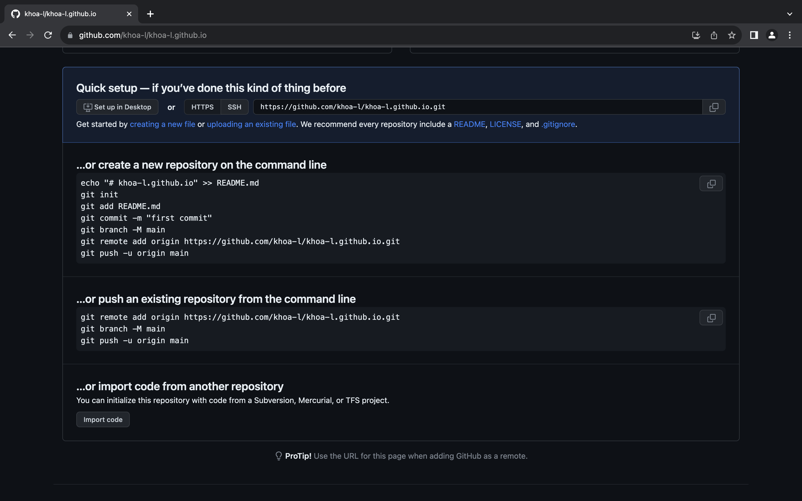

Lab 26 Remote Repositories
Goals
- Create your first GitHub repository and connect to it
GitHub Repository
Speaking of discover-ability, so far you have been working and accessing your page on your own browser and
local system. However, the whole point of a website is for people to visit it. You also have a log
of your coding history in your local Git repository. Local repositories are hard to access on other
computers and are susceptible to disappearing forever if your computer dies.
It's time to connect your local repository to a remote repository on GitHub. This will serve the dual purpose of hosting your local repository on more resilient servers and also make use of a GitHub feature called GitHub pages which will let you host your own website for free!
Make a Remote Repository
Log in or go to GitHub and follow the instructions below to make a remotely hosted repository on GitHub servers.
- From your GitHub homepage, click the circular profile icon in the top-right corner of the screen
- From the dropdown menu, go to Your repositories
- In your repository list, click the bright, green button that says New
- Name your repository
<username>.github.ioand keep it public
Connect Local Repo to Remote Repo
When you make your repository you should see this screen.
GitHub provides some useful snippets of code to connect to a remote repository. Since we have an existing repository, let's go with the second option and push an existing repository from the command line!
Execute
git remote add origin
https://github.com/<username>/<username>.github.io.gitNote: Replace <username> with your username.
To check if you are connected, run the following command:
Execute
git remote -vOutput
git remote -v
(out)origin https://github.com/<username>/<username>.github.io.git (fetch)
(out)origin https://github.com/<username>/<username>.github.io.git (push)Note: origin is the reference to your remote Git repository.
Using a Distributed VCS
Now that we're connected to a remote repository, it adds a few new commands that we have to remember. Before, we would stage our changes and then commit them to our local repository. Now, we also need to remember to push our committed local changes to our remote repository.
In Lab 6 we talked about distributed version control systems. The new git push fits in like so.
flowchart LR
subgraph server [server]
direction TB
subgraph database
direction TB
v1[version 1]
v2[version 2]
v3[version 3]
v3---v2---v1
end
end
subgraph cpa [computer a]
direction TB
subgraph databasea [database]
direction TB
v1a[version 1]
v2a[version 2]
v3a[version 3]
v3a--commit---v2a
v2a--commit---v1a
end
fa[file]
fa---databasea
end
cpa--push-->server
server-->cpa
classDef node font-family:monospace,font-size:14px
classDef clusters font-family:monospace,font-size:14px
classDef cluster rx:5px,ry:5px
classDef edgeLabel font-family:monospace,font-size:14px